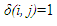

The fraction of local contact (FLC) is defined by
Where  if residues i and j are in contact (contacts are defined just with the spatial distance cutoff), and 0 otherwise. The weighted residue wise implementation of this index in ProtDCal is as follow:
Where wij is a weighting factor equal to the product of any of the residue's properties listed as property based indices for each residue involved in the contact plus the topological distance between the pair of residues, additionally it can be fixed at 1 in the case that not weight it wants to be used. The original quantity can be obtained setting wij=1 and summing (using the aggregation_operator procedure N1, distance 1 of Minkosky) the residue values over all the residues.